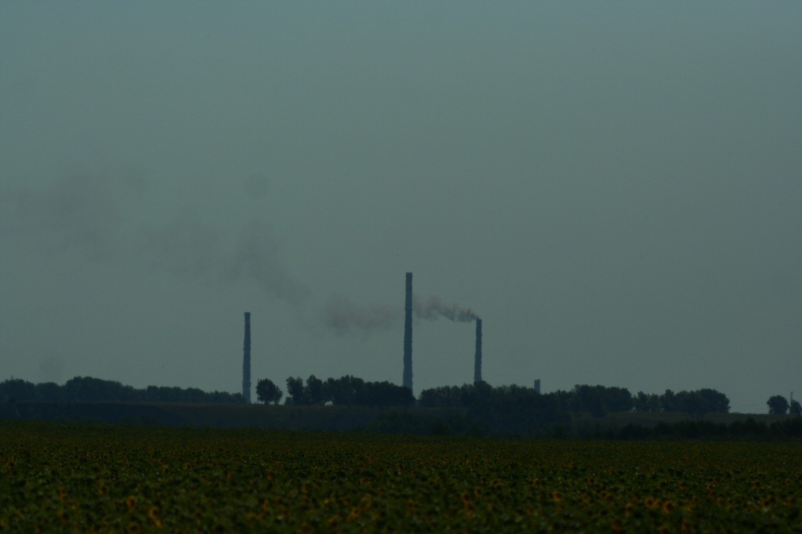

The UN climate summit in Antalya, Turkey, was scheduled to end on Friday. Instead, negotiators from nearly 200 countries spent the day further apart than they were at the start of the week, and the talks look certain to spill into the weekend.
The biggest fight is over fossil fuels. An early draft released on Monday called for faster action to phase out coal, oil and gas. A revised text published on Thursday by co-host Australia removed every mention of them. France’s ecological transition minister, Monique Barbut, called the omission a black mark. Australia’s climate minister, Chris Bowen, who is steering the negotiations, said consultations will continue until there is clear consensus.
Oil-producing countries have resisted reopening the question since COP28 in Dubai, where governments agreed to transition away from fossil fuels but set no dates or targets. Last year’s COP30 in Brazil ended without mentioning fossil fuels at all, and this year’s talks have so far followed the same pattern.
Other disputes are piling up. Turkey wants countries to sign up to a voluntary goal of raising electricity’s share of global energy use to 35% by 2035, but some delegations say the text does not require that power to be clean. Dozens of countries want the next IPCC science reports ready before the 2028 global review, while Saudi Arabia and India want them pushed to 2029. On money, rich countries are resisting more adaptation funding, and the draft drops a $120 billion goal developing nations wanted, offering only further talks on tripling adaptation finance by 2035.
For South Africa and the rest of the continent, adaptation finance is the line to watch. Africa contributes little to global emissions but faces some of the hardest climate impacts, from drought to the El Niño-driven heat now building across southern Africa. Whatever text survives the weekend will decide how much help actually arrives.

Photo: Smoke-stack of Biyskay TEC1, public domain, via Wikimedia Commons
Why fossil fuels keep slipping out
UN climate decisions need consensus, which in practice means any determined group of countries can block language it does not like. Major oil and gas producers have consistently resisted wording that names fossil fuels or sets dates for reducing their use. Each year, early drafts tend to be bolder, and final texts tend to be weaker.
Climate scientists say the gap between what is promised and what is needed keeps growing. The draft itself expresses deep concern that the world is about to breach the 1.5°C warming limit set in the Paris Agreement.
What South Africa wants
South Africa sits in a difficult position. It is a major coal user that is trying to move to cleaner power, and it relies on international finance to help pay for that shift. At the same time, it faces growing climate damage at home, from floods in KwaZulu-Natal and the Eastern Cape to drought and heat in the interior.
For countries like South Africa, the most useful outcome from Antalya would be clear commitments on adaptation money and support for a fair energy transition. Those are exactly the areas where rich countries are pushing back hardest.